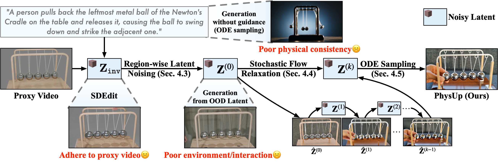

ProxyUp: Training-Free Proxy-Conditioned Video Generation for Controllable Dynamics
ProxyUp:
Training-Free
Proxy-Conditioned
Video Generation
for Controllable
Dynamics
1Shanghai Jiao Tong University
2Huawei Inc.
Gallery
Abstract
Precise control over complex dynamics remains challenging for modern video generative models, as text prompts alone often cannot specify physically plausible, fine-grained motion and interactions. We introduce proxy-conditioned video generation, where a coarse proxy video from physics-based simulation or real-world recording serves as a dynamics carrier to control foreground object motion.
Given a proxy video and a text prompt, the goal is to synthesize a new video that preserves the proxy dynamics while generating novel content and plausible interactions aligned with the prompt. Since paired proxy-target videos are difficult to obtain, we propose ProxyUp, a training-free framework built on pretrained video generative models.
ProxyUp first inverts the proxy video into an intermediate latent representation and applies region-wise latent noising, preserving motion-critical proxy latents while injecting noise into regions intended for text-driven regeneration. To mitigate the distribution mismatch and weak foreground-background coupling introduced by this heuristic latent composition, we further propose Stochastic Flow Relaxation, which progressively relaxes the composed latent toward the model's learned distribution before ODE sampling. Experiments on both simulation and real-world proxies show that ProxyUp outperforms strong video editing and motion transfer baselines in dynamic fidelity and text alignment.
Method

Selected Video Results
Baseline Comparison
Wan2.2 T2V-A14B
VACE
DiTFlow
FlowDirector
Ours
Click to view Prompt
Cinematic shot in a kitchen. Front view of a piece of bread. The bread rests on a wooden table, surrounded by various kitchen utensils. A person stands behind the bread holding a sharp knife. They perform a downward slicing motion through the bread, slide the cut slice away, and repeat this specific sequence three times in a row. Soft natural lighting, 4k resolution.
Proxy Video
Wan2.2 T2V-A14B
VACE
DiTFlow
FlowDirector
Ours
Click to view Prompt
A person stands in front of a large floor-to-ceiling window with two panels of light, flowing curtains drawn closed in the center. With both hands, they grasp the inner edges of the curtains and smoothly pull them outward in opposite directions. Sunlight gradually floods into the room as the curtains part, revealing a bright outdoor view.
Prompt Diversity
Cozy study room, dark wood grain desk, warm yellow lamp lighting. A vintage hardcover book stands upright, a baseball resting tightly to its right. Heavy book topples onto baseball, then slides down off the baseball.
Minimalist style, white matte table, bright natural daylight, blurred city view through floor-to-ceiling windows in background. Modern book and white baseball. Hand pushes book over, it hits the ball, slowly slides down off the baseball, high definition, realistic physics simulation.
Cinematic moody lighting, spotlight focused on desk, floating dust particles, high contrast shadows. Heavy book topples onto baseball, slow-motion feel, inertia slides it down off the baseball, dramatic lighting.
An AI research facility. A small tabletop robotic arm performs a precision tap on the first domino to collect physics interaction data.
A mahogany office desk. A businessman flicks the first wooden domino, making the five pieces topple one by one.
A clean workbench. A soft-robotic finger gently pushes the top of the first domino, initiating a chain reaction through the sequence of five.
An outdoor park bench. A person pushes the first of five standing notebooks, knocking them all down in succession.
A cozy bedroom. Someone nudges a standing comic book, causing a line of five books on the desk to fall over.
A modern office space. A mobile manipulator robot extends its gripper to push the edge of a standing folder, knocking down a row of five books.
A high-tech robotics lab. A high-speed robotic arm calculates the trajectory and strikes the cue ball with a carbon-fiber stick, breaking the billiard rack.
A sunny outdoor patio. Someone strikes the white ball with a cue stick, breaking the tightly packed triangle of pool balls.
A dusty garage. A person breaks the pool balls on an old, worn-out table using a chipped cue stick.
Failure Cases
Proxy Video
Ours
Proxy Video
Ours
ProxyUp on Wan2.1-T2V-14B
Proxy Video
Ours
Proxy Video
Ours
Proxy Video
Ours
Proxy Video
Ours
Acknowledgements
We thank Articraft3D and NeoWorld-Pro for providing proxy video sources used in the gallery.
BibTeX
@article{zhou2026proxyup,
title = {ProxyUp: Training-Free Proxy-Conditioned Video Generation for Controllable Dynamics},
author = {Zhou, Zanwei and Cen, Jiazhong and Fang, Jiemin and He, Yumeng and Yang, Chen and Li, Sikuang and Meng, Fanpeng and Bao, Zhikuan and Shen, Wei and Tian, Qi},
year = {2026}
}